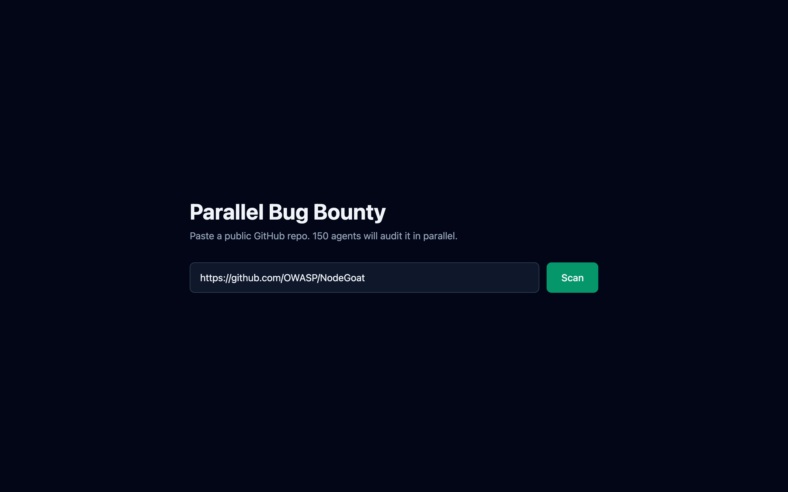
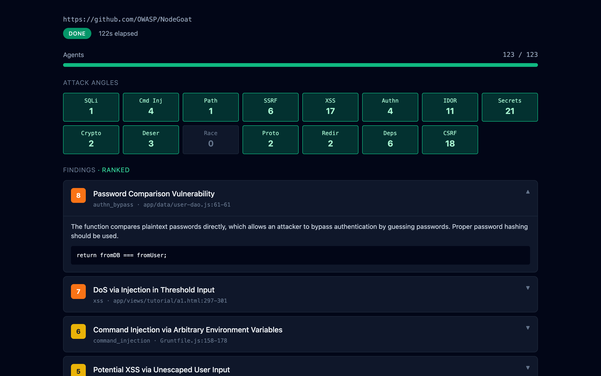
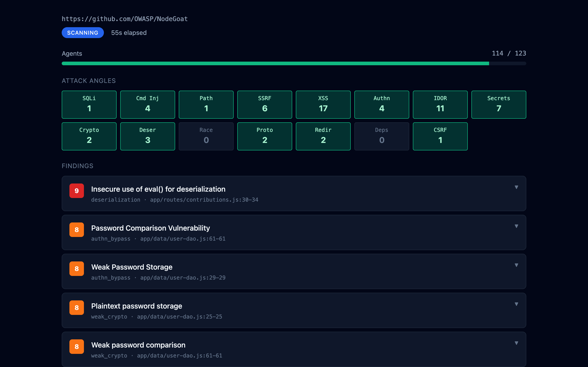

Convex OpenAI React Workpool
Weekend Build with Codex · HCMC · 2026-05-09
Snyk / Semgrep / GHAS pattern-match. Miss logic bugs. Ignore intent.
One prompt, one pass. Token limit kills coverage past ~50 findings.
Nondeterministic. No cache. No benchmark. No way to prove accuracy.
15 attack angles × 10 file chunks × 4s sequential = 10 minutes per scan. Demo unusable.
90s vs 10 min sequential

Browser ──WS── Convex ──schedule──> orchestrator (Node)
│ │
│ └─enqueue × N──> Workpool(20) ──> agent ──> OpenAI
│ │
│ ├─ cache.lookup (sha256 key)
│ │ hit → reuse findings
│ │ miss → call OpenAI, cache.put
│ │
│ └─ findings.insertMany
│ │
│ (last agent fires) ───> dedup.run │
│ ├─ embed (text-embedding-3-small) │
│ ├─ union-find cluster (cosine ≥0.85)│
│ └─ LLM rerank top-30 │
│ │
│ (juice-shop URL?) ───> eval.score → benchmarks (P/R/F1) ──────┘
│
└── live queries ── React (constellation, table, drawer)
No polling. No queues we run. Convex scheduler + Workpool do it all.
sha256(angle|model|prompt|chunk)
Re-scan same code = 0 LLM tokens. Hit rate shown live in StatsBar.
Cosine ≥ 0.85, gated by file+line overlap. Deterministic — pure math, not an LLM.
Scales past 1000 findings; current single-LLM reducers cap at ~50.
Hand-curated truth set. Every scan scored: Precision · Recall · F1.
Beat us? Prove it on the same corpus.
Top-3 findings precomputed eagerly. Click any other → on-demand.


15 nodes = 15 attack angles. Radius scales with finding count, color = max severity, pulse = newest finding.
Parallel agents → deterministic dedup → cached → benchmarked → patched.
github.com/<you>/hackathon · built on Convex + OpenAI · MIT